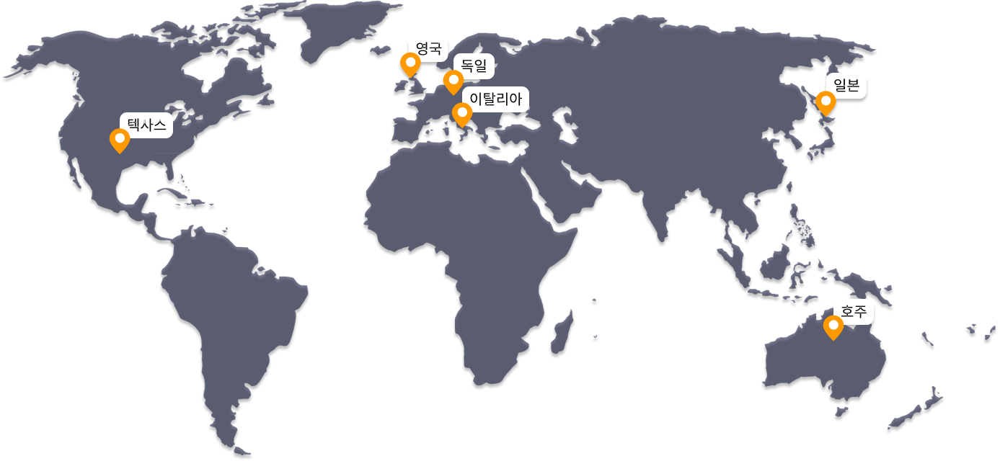

하지만 민영화, 진짜 좋은 방법일까?
더 나은 경쟁력과 기술과 서비스를 위한 민영화 추진, 예상대로 흘러갈 수 있을까? 다른 나라의 민영화 예시를 통해 알아보자.

텍사스
한파로 인해 전기료가 증가해 평균73만원에서 1880만원까지 급등한 전기 청구서를 보내는 것을 제한함.
영국
에너지 요금 인상에 따른 소비자 부담 완화를 위해 18개월간 에너지 요금을 지원하기로 결정.
독일
무적 어려움을 겪고 있는 에너지 회사들의 지분을 국가가 인수하는 법안을 마련하고, 전력·가스회사 Uniper를 국유화하기로 결정.

이탈리아
일정 조건을 충족하는 약 300만명의 취약계층에 대해 추가적인 주택용 요금 인상분을 정부 재정에서 100% 지원.
일본
종합경제대책의 일환으로 정부 재원을 통해 전기요금을 직접 보조하기로 결정.
호주
주민들의 전기요금 부담을 덜어주기 위해 주 정부는 자체 예산으로 주택용 고객 및 취약계층을 대상으로 전기요금 할인을 제공.